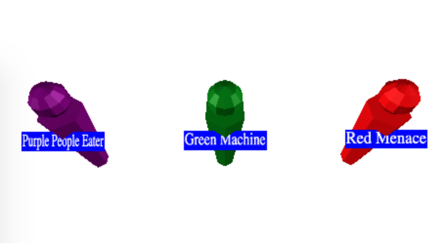

Dans un article précédent nous avons utilisé une CanvasTexture
pour créer des étiquettes / badges sur les personnages. Parfois, nous aimerions créer des étiquettes ou
d'autres éléments qui font toujours face à la caméra. 4.js fournit le Sprite et le
SpriteMaterial pour y parvenir.
Modifions l'exemple de badge de l'article sur les textures de canevas
pour utiliser Sprite et le SpriteMaterial
function makePerson(x, labelWidth, size, name, color) {
const canvas = makeLabelCanvas(labelWidth, size, name);
const texture = new FOUR.CanvasTexture(canvas);
// car notre canevas n'est probablement pas une puissance de 2
// dans les deux dimensions, définissez le filtrage de manière appropriée.
texture.minFilter = FOUR.LinearFilter;
texture.wrapS = FOUR.ClampToEdgeWrapping;
texture.wrapT = FOUR.ClampToEdgeWrapping;
- const labelMaterial = new FOUR.MeshBasicMaterial({
+ const labelMaterial = new FOUR.SpriteMaterial({
map: texture,
- side: FOUR.DoubleSide,
transparent: true,
});
const root = new FOUR.Object3D();
root.position.x = x;
const body = new FOUR.Mesh(bodyGeometry, bodyMaterial);
root.add(body);
body.position.y = bodyHeight / 2;
const head = new FOUR.Mesh(headGeometry, bodyMaterial);
root.add(head);
head.position.y = bodyHeight + headRadius * 1.1;
- const label = new FOUR.Mesh(labelGeometry, labelMaterial);
+ const label = new FOUR.Sprite(labelMaterial);
root.add(label);
label.position.y = bodyHeight * 4 / 5;
label.position.z = bodyRadiusTop * 1.01;
et les étiquettes font maintenant toujours face à la caméra
Un problème est que, sous certains angles, les étiquettes intersectent maintenant les personnages.

Nous pouvons déplacer la position des étiquettes pour corriger cela.
+// si les unités sont des mètres, alors 0.01 ici donne une taille +// de l'étiquette en centimètres. +const labelBaseScale = 0.01; const label = new FOUR.Sprite(labelMaterial); root.add(label); -label.position.y = bodyHeight * 4 / 5; -label.position.z = bodyRadiusTop * 1.01; +label.position.y = head.position.y + headRadius + size * labelBaseScale; -// si les unités sont des mètres, alors 0.01 ici donne une taille -// de l'étiquette en centimètres. -const labelBaseScale = 0.01; label.scale.x = canvas.width * labelBaseScale; label.scale.y = canvas.height * labelBaseScale;
Une autre chose que nous pouvons faire avec les panneaux d'affichage est de dessiner des façades.
Au lieu de dessiner des objets 3D, nous dessinons des plans 2D avec une image d'objets 3D. C'est souvent plus rapide que de dessiner des objets 3D.
Par exemple, créons une scène avec une grille d'arbres. Nous allons créer chaque arbre à partir d'un cylindre pour la base et d'un cône pour le sommet.
Nous créons d'abord la géométrie du cône et du cylindre ainsi que les matériaux que tous les arbres partageront
const trunkRadius = .2;
const trunkHeight = 1;
const trunkRadialSegments = 12;
const trunkGeometry = new FOUR.CylinderGeometry(
trunkRadius, trunkRadius, trunkHeight, trunkRadialSegments);
const topRadius = trunkRadius * 4;
const topHeight = trunkHeight * 2;
const topSegments = 12;
const topGeometry = new FOUR.ConeGeometry(
topRadius, topHeight, topSegments);
const trunkMaterial = new FOUR.MeshPhongMaterial({color: 'brown'});
const topMaterial = new FOUR.MeshPhongMaterial({color: 'green'});
Ensuite, nous allons créer une fonction qui crée un Mesh
chacun pour le tronc et le sommet d'un arbre
et les parentent à un Object3D.
function makeTree(x, z) {
const root = new FOUR.Object3D();
const trunk = new FOUR.Mesh(trunkGeometry, trunkMaterial);
trunk.position.y = trunkHeight / 2;
root.add(trunk);
const top = new FOUR.Mesh(topGeometry, topMaterial);
top.position.y = trunkHeight + topHeight / 2;
root.add(top);
root.position.set(x, 0, z);
scene.add(root);
return root;
}
Ensuite, nous allons créer une boucle pour placer une grille d'arbres.
for (let z = -50; z <= 50; z += 10) {
for (let x = -50; x <= 50; x += 10) {
makeTree(x, z);
}
}
Ajoutons également un plan de sol tant que nous y sommes
// ajouter le sol
{
const size = 400;
const geometry = new FOUR.PlaneGeometry(size, size);
const material = new FOUR.MeshPhongMaterial({color: 'gray'});
const mesh = new FOUR.Mesh(geometry, material);
mesh.rotation.x = Math.PI * -0.5;
scene.add(mesh);
}
et changeons l'arrière-plan en bleu clair
const scene = new FOUR.Scene();
-scene.background = new FOUR.Color('white');
+scene.background = new FOUR.Color('lightblue');
et nous obtenons une grille d'arbres
Il y a 11x11 ou 121 arbres. Chaque arbre est constitué d'un cône de 12 polygones et d'un tronc de 48 polygones, donc chaque arbre fait 60 polygones. 121 * 60 = 7260 polygones. Ce n'est pas énorme, mais bien sûr, un arbre 3D plus détaillé pourrait avoir entre 1000 et 3000 polygones. S'ils avaient 3000 polygones chacun, alors 121 arbres représenteraient 363000 polygones à dessiner.
En utilisant des façades, nous pouvons réduire ce nombre.
Nous pourrions créer manuellement une façade dans un logiciel de dessin, mais écrivons du code pour essayer d'en générer une.
Écrivons du code pour rendre un objet dans une texture
en utilisant un RenderTarget. Nous avons abordé le rendu vers une RenderTarget
dans l'article sur les cibles de rendu.
function frameArea(sizeToFitOnScreen, boxSize, boxCenter, camera) {
const halfSizeToFitOnScreen = sizeToFitOnScreen * 0.5;
const halfFovY = FOUR.MathUtils.degToRad(camera.fov * .5);
const distance = halfSizeToFitOnScreen / Math.tan(halfFovY);
camera.position.copy(boxCenter);
camera.position.z += distance;
// choisir des valeurs proches et éloignées pour le frustum qui
// contiendra la boîte.
camera.near = boxSize / 100;
camera.far = boxSize * 100;
camera.updateProjectionMatrix();
}
function makeSpriteTexture(textureSize, obj) {
const rt = new FOUR.WebGLRenderTarget(textureSize, textureSize);
const aspect = 1; // car la cible de rendu est carrée
const camera = new FOUR.PerspectiveCamera(fov, aspect, near, far);
scene.add(obj);
// calculer la boîte qui contient obj
const box = new FOUR.Box3().setFromObject(obj);
const boxSize = box.getSize(new FOUR.Vector3());
const boxCenter = box.getCenter(new FOUR.Vector3());
// régler la caméra pour cadrer la boîte
const fudge = 1.1;
const size = Math.max(...boxSize.toArray()) * fudge;
frameArea(size, size, boxCenter, camera);
renderer.autoClear = false;
renderer.setRenderTarget(rt);
renderer.render(scene, camera);
renderer.setRenderTarget(null);
renderer.autoClear = true;
scene.remove(obj);
return {
position: boxCenter.multiplyScalar(fudge),
scale: size,
texture: rt.texture,
};
}
Quelques points à noter concernant le code ci-dessus :
Nous utilisons le champ de vision (fov) défini au-dessus de ce code.
Nous calculons une boîte qui contient l'arbre de la même manière que nous l'avons fait dans l'article sur le chargement d'un fichier .obj avec quelques modifications mineures.
Nous appelons frameArea à nouveau, adapté de l'article sur le chargement d'un fichier .obj.
Dans ce cas, nous calculons à quelle distance la caméra doit se trouver de l'objet,
compte tenu de son champ de vision, pour contenir l'objet. Nous positionnons ensuite la caméra en -z à cette distance
du centre de la boîte qui contient l'objet.
Nous multiplions la taille que nous voulons ajuster par 1,1 (fudge) pour nous assurer que l'arbre rentre
complètement dans la cible de rendu. Le problème ici est que la taille que nous utilisons pour
calculer si l'objet rentre dans la vue de la caméra ne prend pas en compte
que les bords mêmes de l'objet finiront par sortir de la zone que nous avons calculée.
Nous pourrions calculer comment faire rentrer 100% de la boîte, mais cela gaspillerait aussi de l'espace,
alors au lieu de cela, nous 'truquons' un peu.
Ensuite, nous rendons sur la cible de rendu et retirons l'objet de la scène.
Il est important de noter que nous avons besoin des lumières dans la scène, mais nous devons nous assurer que rien d'autre n'est dans la scène.
Nous devons également ne pas définir de couleur d'arrière-plan sur la scène
const scene = new FOUR.Scene();
-scene.background = new FOUR.Color('lightblue');
Enfin, nous avons créé la texture, nous la renvoyons ainsi que la position et l'échelle dont nous avons besoin pour créer la façade afin qu'elle apparaisse au même endroit.
Nous créons ensuite un arbre et appelons ce code en le lui passant
// créer la texture du panneau d'affichage const tree = makeTree(0, 0); const facadeSize = 64; const treeSpriteInfo = makeSpriteTexture(facadeSize, tree);
Nous pouvons ensuite créer une grille de façades au lieu d'une grille de modèles d'arbres
+function makeSprite(spriteInfo, x, z) {
+ const {texture, offset, scale} = spriteInfo;
+ const mat = new FOUR.SpriteMaterial({
+ map: texture,
+ transparent: true,
+ });
+ const sprite = new FOUR.Sprite(mat);
+ scene.add(sprite);
+ sprite.position.set(
+ offset.x + x,
+ offset.y,
+ offset.z + z);
+ sprite.scale.set(scale, scale, scale);
+}
for (let z = -50; z <= 50; z += 10) {
for (let x = -50; x <= 50; x += 10) {
- makeTree(x, z);
+ makeSprite(treeSpriteInfo, x, z);
}
}
Dans le code ci-dessus, nous appliquons le décalage et l'échelle nécessaires pour positionner la façade afin qu'elle apparaisse au même endroit où l'arbre d'origine aurait apparu.
Maintenant que nous avons terminé de créer la texture de la façade de l'arbre, nous pouvons à nouveau définir l'arrière-plan
scene.background = new FOUR.Color('lightblue');
et maintenant nous obtenons une scène de façades d'arbres
Comparez avec les modèles d'arbres ci-dessus et vous pouvez voir que l'apparence est assez similaire. Nous avons utilisé une texture basse résolution, seulement 64x64 pixels, donc les façades sont pixelisées. Vous pourriez augmenter la résolution. Souvent, les façades ne sont utilisées qu'à grande distance lorsqu'elles sont assez petites, donc une texture basse résolution est suffisante et cela permet d'éviter de dessiner des arbres détaillés qui ne font que quelques pixels de taille lorsqu'ils sont loin.
Un autre problème est que nous ne voyons l'arbre que d'un côté. Cela est souvent résolu en rendant plus de façades, par exemple depuis 8 directions autour de l'objet, puis en définissant quelle façade afficher en fonction de la direction depuis laquelle la caméra regarde la façade.
Que vous utilisiez des façades ou non, cela dépend de vous, mais j'espère que cet article vous a donné des idées et suggéré des solutions si vous décidez de les utiliser.